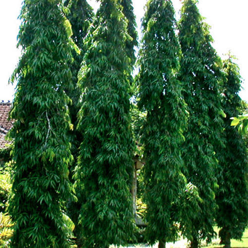

Overview / परिचय

The Ashoka Tree is one of the most sacred and beautiful trees in India. It is famous for its fragrant orange-red flowers and evergreen leaves.
अशोक वृक्ष हा भारतातील सर्वात पवित्र आणि सुंदर वृक्षांपैकी एक आहे. त्याची केशरी-लाल सुगंधी फुले आणि सदाहरित पाने प्रसिद्ध आहेत.